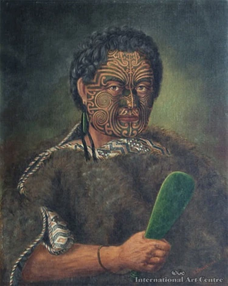

Many years ago in Hawaiki there lived a young warrior called Kupe. He had fallen in love with his cousin's wife. While fishing one day Kupe plotted to murder his cousin Hoturapa. Pretending his line was snagged, Kupe sensed Hoturapa overboard to free it. Kupe quickly paddled away, leaving his cousin to drown. When Hoturapa's relatives found out about the murder, they were very angry, so Kupe, his new wife and his relatives fled from their home with the warriors in hot pursuit. Just in time they reached the shore and pushing out in their canoes, set out on their epic journey. The voyagers travelled over the sea for many weeks. Food and water were running low, when suddenly a long white cloud was sighted. Knowing this to mean land, they continued their journey with renewed heat. Upon reaching the shore, Kupe set off down the coast of the island until he came to a wide channel of water, which is now called Cook Strait. Kupe named this new land Aotearoa, Land of the Long White Cloud. In Cook Strait, Kupe's canoes were confronted by an octopus of gigantic proportions. This pet of Hoturapa's was sent by him to score vengeance upon Kupe who had stolen his wife. Kupe and the octopus engaged in fierce battle, with neither gaining any ground. In an attempt to out wit the octopus, Kupe threw gourds and calabashes at it. The octopus relaxed thinking they were the severed heads of Kupe and his crew. Relaxing momentarily, the octopus was oblivious to Kupe's swift and fatal attack with spear and mere. Having defeated the octopus, Kupe, his wife and crew continued their journey up the east coast of Aotearoa. Kupe continued to explore New Zealand in the hope of finding forms of life. He left the beautiful land having seen and heard only a bellbird and a fantail. He returned over the waves to his homeland in Hawaiki and was gladly received by his relatives. He shared his stories with his people and though he never returned, future generations travelled across the seas and made New Zealand their home.

Kupe House
House at Macleans College Kupe House was established in 1981 as part of the Macleans College whānau house system. It was officially opened by Hiwi Tauroa. The house colour is gold, and its mascot is the kiwi. Over the years, Kupe House has built strong traditions, achieved success in school competitions such as football, and developed a service aspect through Kiwis for Kiwi. Leadership within the house is provided each year by selected Year 13 executives, who uphold Kupe House’s values and lead assemblies. The current house leader is Ms Aliesha Chamberlain.